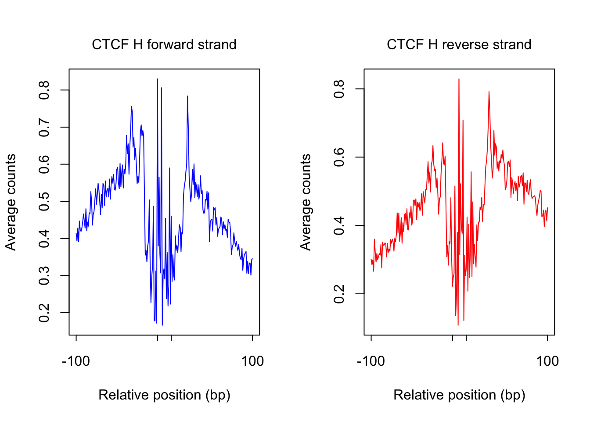
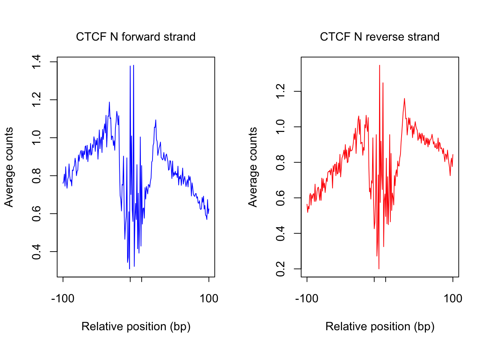
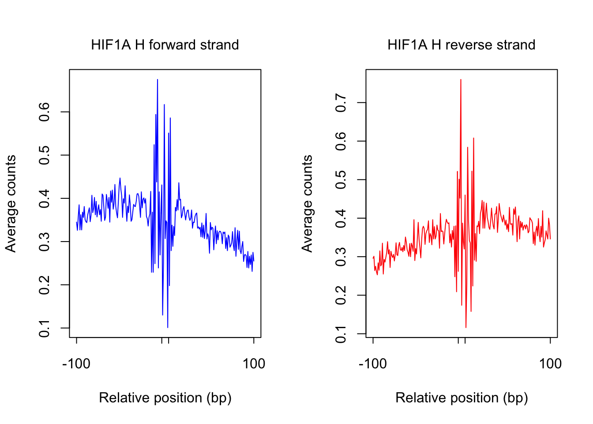
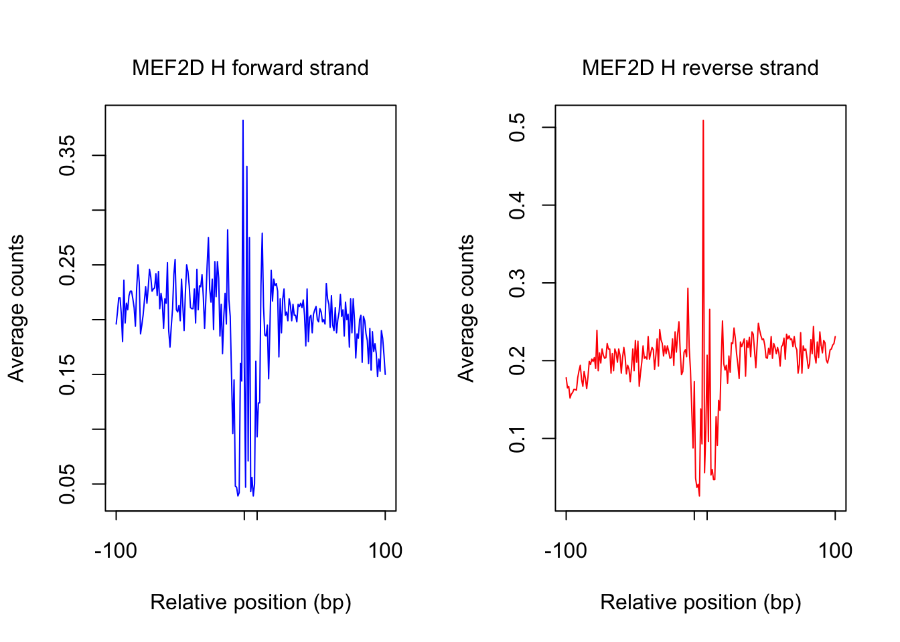
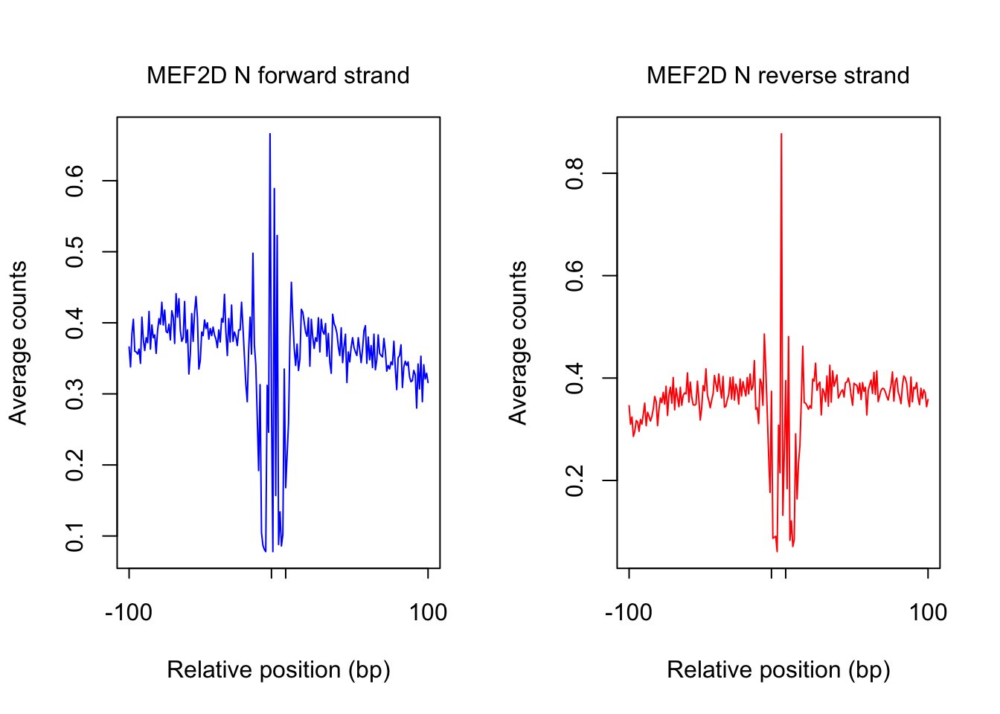

ATAC-seq footprint profiles using data of human amniotic epithelial cells (HAECs) between normoxia and hypoxia conditions from Olivia Gray
Kaixuan Luo
7/31/2018
Last updated: 2018-08-30
workflowr checks: (Click a bullet for more information)-
✔ R Markdown file: up-to-date
Great! Since the R Markdown file has been committed to the Git repository, you know the exact version of the code that produced these results.
-
✔ Environment: empty
Great job! The global environment was empty. Objects defined in the global environment can affect the analysis in your R Markdown file in unknown ways. For reproduciblity it’s best to always run the code in an empty environment.
-
✔ Seed:
set.seed(20180613)The command
set.seed(20180613)was run prior to running the code in the R Markdown file. Setting a seed ensures that any results that rely on randomness, e.g. subsampling or permutations, are reproducible. -
✔ Session information: recorded
Great job! Recording the operating system, R version, and package versions is critical for reproducibility.
-
Great! You are using Git for version control. Tracking code development and connecting the code version to the results is critical for reproducibility. The version displayed above was the version of the Git repository at the time these results were generated.✔ Repository version: a9478f8
Note that you need to be careful to ensure that all relevant files for the analysis have been committed to Git prior to generating the results (you can usewflow_publishorwflow_git_commit). workflowr only checks the R Markdown file, but you know if there are other scripts or data files that it depends on. Below is the status of the Git repository when the results were generated:
Note that any generated files, e.g. HTML, png, CSS, etc., are not included in this status report because it is ok for generated content to have uncommitted changes.Ignored files: Ignored: .DS_Store Ignored: .Rhistory Ignored: .Rproj.user/ Ignored: code_RCC/.DS_Store Ignored: data/.DS_Store Untracked files: Untracked: analysis/ATACseq_footprint_profiles_OliviaGray.Rmd Untracked: analysis/ATACseq_preprocessing_pipeline_GGR_hg38.Rmd Untracked: code_RCC/update_bamnames.R Untracked: workflow_setup.R Unstaged changes: Modified: analysis/ATACseq_preprocessing_pipeline.Rmd Modified: analysis/index.Rmd Modified: code_RCC/fimo_jaspar_motif_rcc.sh Modified: code_RCC/genome_coverage_bamToBigwig_GGR_hg38.sh Modified: code_RCC/get_motif_count_matrices_GGR_hg38.sh
Expand here to see past versions:
| File | Version | Author | Date | Message |
|---|---|---|---|---|
| Rmd | a9478f8 | kevinlkx | 2018-08-30 | plot ATAC-seq footprint profiles using HAEC data |
functions
## load and combine count matrices
load_combine_counts <- function(bam_basename, pwm_name, dir_count_matrix){
cat("Loading count matrices ... \n")
counts_fwd.df <- read.table(paste0(dir_count_matrix, "/", pwm_name, "/", pwm_name, "_", bam_basename, "_fwdcounts.m.gz"))
counts_rev.df <- read.table(paste0(dir_count_matrix, "/", pwm_name, "/", pwm_name, "_", bam_basename, "_revcounts.m.gz"))
## the first 5 columns from "bwtool extract" are chr, start, end, name, and the number of data points
counts_fwd.df <- counts_fwd.df[, -c(1:5)]
counts_rev.df <- counts_rev.df[, -c(1:5)]
colnames(counts_fwd.df) <- paste0("fwd", 1:ncol(counts_fwd.df))
colnames(counts_rev.df) <- paste0("rev", 1:ncol(counts_rev.df))
counts_combined.m <- as.matrix(cbind(counts_fwd.df, counts_rev.df))
return(counts_combined.m)
}
## select candidate sites by mapability and PWM score cutoffs
select_sites <- function(sites.df, thresh_mapability=NULL, thresh_PWMscore=NULL, readstats_name=NULL){
# cat("loading sites ...\n")
if(!is.null(thresh_mapability)){
cat("Select candidate sites with mapability >=", thresh_mapability, "\n")
idx_mapability <- (sites.df[,"mapability"] >= thresh_mapability)
}else{
idx_mapability <- rep(TRUE, nrow(sites.df))
}
if(!is.null(thresh_PWMscore)){
cat("Select candidate sites with PWM score >=", thresh_PWMscore, "\n")
idx_pwm <- (sites.df[,"pwm_score"] >= thresh_PWMscore)
}else{
idx_pwm <- rep(TRUE, nrow(sites.df))
}
if(!is.null(readstats_name)){
readstats.df <- read.table(readstats_name, header = F)
## if the readstats.df contains chrY, then it means the cell type is male, then the candidate sites should contain chrY,
## otherwise, the cell type is female, then the candidate sites on chrY should be removed.
if( "chrY" %in% readstats.df[,1] ){
cat("include chrY sites \n")
idx_chr <- (sites.df[,1] != "")
}else{
cat("chrY NOT in the bam file, filter out chrY sites \n")
## remove chrY from candidate (motif) sites
idx_chr <- (sites.df[,1] != "chrY")
}
}else{
idx_chr <- rep(TRUE, nrow(sites.df))
}
idx_select <- which(idx_mapability & idx_pwm & idx_chr)
return(idx_select)
}
## plot footprint profiles for selected sites
plot_footprint_sites <- function(tf_name, pwm_name, treatment, flank = 100, thresh_mapability = NULL, thresh_PWMscore = 0, num_top_sites = 1000){
filename_sites <- paste0(dir_sites, "/", pwm_name, "_flank", flank, "_fimo_sites.bed")
sites.df <- read.table(filename_sites, header = T, comment.char = "!", stringsAsFactors = F)
if(ver_genome == "hg38"){
thresh_mapability <- NULL
colnames(sites.df) = c("chr", "start", "end", "name", "pwm_score", "strand", "p_value")
}else{
colnames(sites.df) = c("chr", "start", "end", "name", "pwm_score", "strand", "p_value", "mapability")
}
readstats_name <- paste0(dir_bam_idxstats, "/", "H1_nomito_rdup.idxstats.txt")
idx_select <- select_sites(sites.df, thresh_mapability, thresh_PWMscore, readstats_name)
sites.df <- sites.df[idx_select, c("chr", "start", "end", "name", "pwm_score", "strand", "p_value")]
cat("Number of sites:", nrow(sites.df), "\n")
counts_rep1.m <- load_combine_counts(paste0(treatment, "1_nomito_rdup"), pwm_name, dir_count_matrix)[idx_select,]
counts_rep2.m <- load_combine_counts(paste0(treatment, "2_nomito_rdup"), pwm_name, dir_count_matrix)[idx_select,]
counts_rep3.m <- load_combine_counts(paste0(treatment, "3_nomito_rdup"), pwm_name, dir_count_matrix)[idx_select,]
counts_combined.m <- counts_rep1.m + counts_rep2.m + counts_rep3.m
## Clip extreme values
counts_combined.m[counts_combined.m > max_cuts] <- max_cuts
cat("Dimension of", dim(counts_combined.m), "\n")
if(nrow(counts_combined.m) != nrow(sites.df)){
stop("Sites not matched!")
}
## plot ATAC-seq cut profiles of most accessible sites
order_selected <- order(rowSums(counts_combined.m), decreasing = T)[1:num_top_sites]
counts_selected.m <- counts_combined.m[order_selected,]
counts_profile <- apply(counts_selected.m, 2, mean)
par(mfrow = c(1,2))
counts <- counts_profile[1:(length(counts_profile)/2)]
plot(counts, type = "l", col = "blue", xlab = "Relative position (bp)", ylab = "Average counts",
main = "", xaxt = "n")
mtext(text = paste(tf_name, treatment, "forward strand"), side = 3, line = 1, cex = 1)
axis(1,at=c(1, flank+1, length(counts)-flank, length(counts)), labels=c(-flank, '','' ,flank),
cex.axis = 1, tck=-0.03, tick = T, cex = 1)
counts <- counts_profile[(length(counts_profile)/2+1): length(counts_profile)]
plot(counts, type = "l", col = "red", xlab = "Relative position (bp)", ylab = "Average counts",
main = "", xaxt = "n")
mtext(text = paste(tf_name, treatment, "reverse strand"), side = 3, line = 1, cex = 1)
axis(1,at=c(1, flank+1, length(counts)-flank, length(counts)), labels=c(-flank, '','' ,flank),
cex.axis = 1, tck=-0.03, tick = T, cex = 1)
## save counts matrix
saveRDS(counts_selected.m, paste0(dir_matrix_examples, "/", pwm_name, "_", treatment, "_reps_counts_selected_sites.rds"))
}parameters
ver_genome <- "hg19"
flank <- 100
thresh_mapability <- 0.8
thresh_PWMscore <- 10
num_top_sites <- 1000
bam_name_list <- c("H1_nomito_rdup.bam", "N1_nomito_rdup.bam")
max_cuts <- 20 # Clip extreme values
dir_data <- "~/Dropbox/research/ATAC_DNase/"
dir_count_matrix <- paste0(dir_data, "/ATAC-seq_Olivia_Gray/results/ATAC-seq_count_matrix/")
dir_bam_idxstats <- paste0(dir_data, "/ATAC-seq_Olivia_Gray/ATAC-seq_BAMfiles/")
dir_sites <- paste0(dir_data, "/motif_sites_JASPAR2018/hg19/candidate_sites/1e-4/")
dir_matrix_examples <- paste0(dir_data, "/ATAC-seq_Olivia_Gray/results/ATAC-seq_count_matrix_examples/")
dir.create(dir_matrix_examples, showWarnings = F, recursive = T)ATAC-seq footprint profiles for CTCF
tf_name <- "CTCF"
pwm_name <- "CTCF_MA0139.1_1e-4"
plot_footprint_sites(tf_name, pwm_name, treatment = "H", flank, thresh_mapability, thresh_PWMscore, num_top_sites)Select candidate sites with mapability >= 0.8
Select candidate sites with PWM score >= 10
include chrY sites
Number of sites: 196871
Loading count matrices ...
Loading count matrices ...
Loading count matrices ...
Dimension of 196871 436 
plot_footprint_sites(tf_name, pwm_name, treatment = "N", flank, thresh_mapability, thresh_PWMscore, num_top_sites)Select candidate sites with mapability >= 0.8
Select candidate sites with PWM score >= 10
include chrY sites
Number of sites: 196871
Loading count matrices ...
Loading count matrices ...
Loading count matrices ...
Dimension of 196871 436 
ATAC-seq footprint profiles for HIF1A
tf_name <- "HIF1A"
pwm_name <- "HIF1A_MA1106.1_1e-4"
plot_footprint_sites(tf_name, pwm_name, treatment = "H", flank, thresh_mapability, thresh_PWMscore, num_top_sites)Select candidate sites with mapability >= 0.8
Select candidate sites with PWM score >= 10
include chrY sites
Number of sites: 69233
Loading count matrices ...
Loading count matrices ...
Loading count matrices ...
Dimension of 69233 418 
plot_footprint_sites(tf_name, pwm_name, treatment = "N", flank, thresh_mapability, thresh_PWMscore, num_top_sites)Select candidate sites with mapability >= 0.8
Select candidate sites with PWM score >= 10
include chrY sites
Number of sites: 69233
Loading count matrices ...
Loading count matrices ...
Loading count matrices ...
Dimension of 69233 418 
ATAC-seq footprint profiles for MEF2D
tf_name <- "MEF2D"
pwm_name <- "MEF2D_MA0773.1_1e-4"
plot_footprint_sites(tf_name, pwm_name, treatment = "H", flank, thresh_mapability, thresh_PWMscore, num_top_sites)Select candidate sites with mapability >= 0.8
Select candidate sites with PWM score >= 10
include chrY sites
Number of sites: 230812
Loading count matrices ...
Loading count matrices ...
Loading count matrices ...
Dimension of 230812 422 
plot_footprint_sites(tf_name, pwm_name, treatment = "N", flank, thresh_mapability, thresh_PWMscore, num_top_sites)Select candidate sites with mapability >= 0.8
Select candidate sites with PWM score >= 10
include chrY sites
Number of sites: 230812
Loading count matrices ...
Loading count matrices ...
Loading count matrices ...
Dimension of 230812 422 
Session information
sessionInfo()R version 3.4.3 (2017-11-30)
Platform: x86_64-apple-darwin15.6.0 (64-bit)
Running under: macOS High Sierra 10.13.6
Matrix products: default
BLAS: /Library/Frameworks/R.framework/Versions/3.4/Resources/lib/libRblas.0.dylib
LAPACK: /Library/Frameworks/R.framework/Versions/3.4/Resources/lib/libRlapack.dylib
locale:
[1] en_US.UTF-8/en_US.UTF-8/en_US.UTF-8/C/en_US.UTF-8/en_US.UTF-8
attached base packages:
[1] stats graphics grDevices utils datasets methods base
loaded via a namespace (and not attached):
[1] workflowr_1.1.1 Rcpp_0.12.16 digest_0.6.15
[4] rprojroot_1.3-2 R.methodsS3_1.7.1 backports_1.1.2
[7] git2r_0.21.0 magrittr_1.5 evaluate_0.10.1
[10] stringi_1.1.7 whisker_0.3-2 R.oo_1.22.0
[13] R.utils_2.6.0 rmarkdown_1.9 tools_3.4.3
[16] stringr_1.3.0 yaml_2.1.18 compiler_3.4.3
[19] htmltools_0.3.6 knitr_1.20 This reproducible R Markdown analysis was created with workflowr 1.1.1